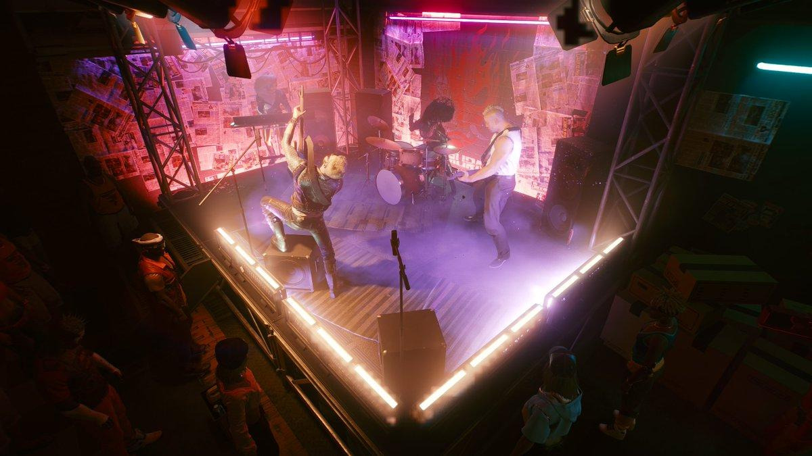
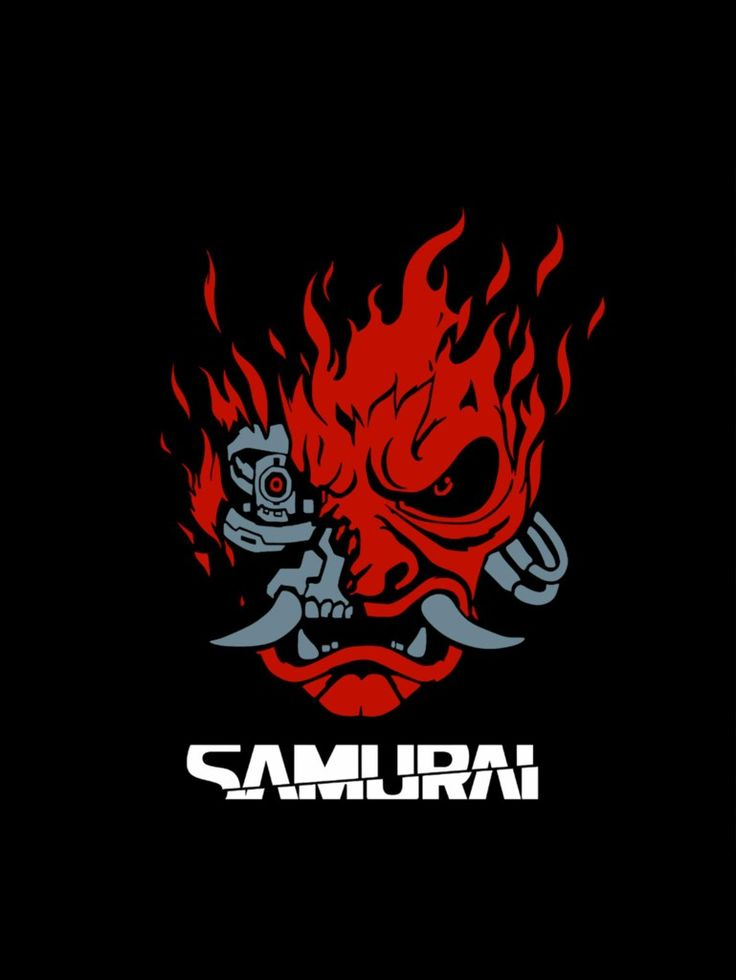

SAMURAI é uma banda fictícia de cromo-rock do universo Cyberpunk. A banda surgiu em Night City e se tornou uma das maiores e mais influentes bandas da história daquele mundo.
Ela foi fundada por Johnny Silverhand e Kerry Eurodyne, inicialmente tocando em pequenos bares e clubes underground de Night City. O primeiro show da banda aconteceu no Red Dirt. Posteriormente, após uma apresentação no Rainbow Cadenza, eles chamaram a atenção de Jack Masters, produtor da Universal Music, que contratou a banda.
A Samurai não era apenas uma banda musical. A música era uma forma de protesto.
Johnny utilizava as músicas da banda para atacar:
megacorporações;
governos;
exploração econômica;
controle social;
desigualdade;
perda da liberdade individual.
Por isso, a Samurai acabou se tornando um dos símbolos do movimento Rockerboy — artistas que utilizam sua influência e sua música para desafiar as estruturas de poder.
A formação original da SAMURAI consistia em:
Johnny e Kerry eram os principais líderes criativos da banda.


O vocalista e principal figura da Samurai é Johnny Silverhand. Seu nome verdadeiro é Robert John Linder.
Antes de se tornar músico, Johnny foi soldado. Ele participou da Segunda Guerra Centro-Americana e acabou profundamente marcado pela experiência. Durante a guerra, perdeu o braço esquerdo e posteriormente recebeu um braço cibernético — daí surgiu o sobrenome "Silverhand".
Depois de abandonar a carreira militar, Johnny foi para Night City.
Foi nesse momento que sua revolta contra governos, corporações e sistemas de poder começou a tomar uma nova forma: a música.
Johnny conheceu Kerry Eurodyne e os dois fundaram a Samurai.
Em Cyberpunk 2077, Johnny é interpretado visualmente e dublado por Keanu Reeves. Reeves empresta ao personagem: rosto; voz; captura de movimento; atuação. Porém, existe uma curiosidade muito interessante para sua página: A voz musical não é de Keanu Reeves. As músicas de Johnny/Samurai presentes no jogo são interpretadas pela banda sueca Refused. O vocal das gravações é de Dennis Lyxzén, vocalista da Refused.